— ALGORITHM CONTEST / 06
第六章 动态规划
从线性 DP 一路到区间、树形、状压、数位与插头 DP，难点全在状态设计与转移顺序。
01 / SECTION
什么是动态规划?
- 一句话：把大问题拆成相互重叠的子问题，用表格保存子问题答案，避免重复计算。
- 与分治的分界：分治的子问题互不重叠（如归并排序），DP 的子问题大量重叠，所以必须记忆化。
- 成立条件（三要素）：
- 最优子结构：由子问题的最优解能推出原问题最优解；
- 无后效性：某状态一旦确定，后续决策只与它有关，与“怎么到达它”无关；
- 状态可定义：能用有限个参数刻画“当前局面”。
- 标准五步：定义状态 → 找状态转移方程 → 确定初值与边界 → 确定计算顺序（递推方向）→ 输出答案。
- 两种实现：递推（自底向上，填表）、记忆化搜索（自顶向下，递归 + 缓存）；前者常数小，后者只算必要状态。
- 复杂度 = 状态数 × 单个状态的转移代价；优化方向就是压缩状态或减少转移。
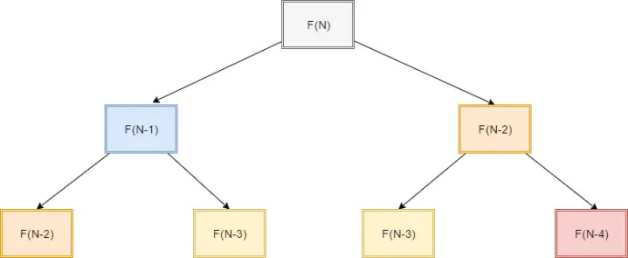
02 / SECTION
动态规划概念和实例讲解
- 例题（数字三角形 / 最大路径和）：从顶走到第 n 行，每次只能走到正下方或右下方，求路径最大和。
- 状态：
f[i][j]= 走到(i,j)的最大和； - 转移：
f[i][j] = a[i][j] + max(f[i-1][j-1], f[i-1][j])； - 边界：第一列只能从正上方来；答案
max(f[n][j])。 - 复杂度
O(n²)，若只依赖上一层可滚动成O(n)空间。 - 例题（爬楼梯）：每次 1 或 2 级，
f[i] = f[i-1] + f[i-2]（斐波那契型）。 - 例题（最长上升子序列 LIS）：
O(n²)：f[i] = 1 + max{f[j] | j<i, a[j]<a[i]}；O(n log n)：维护“长度为 k 的上升子序列末尾最小值”数组，用lower_bound替换，数组长度即答案。- 体会：DP 的核心工作量在于找状态，找到之后转移往往只是加减 max/min。
03 / SECTION
什么是记忆化搜索？
- 定义：递归求解 + 把已算过的状态存起来（
f[state]或哈希表），再次遇到直接返回。 - 又称“自顶向下的 DP”，与递推 DP 在数学上等价，区别是只计算真正被访问到的状态。
- 适合：状态转移依赖判断分支多、有效状态稀疏、递推顺序不直观的题（如博弈、带限制的搜索）。
- 写法要点：
- 用“未访问标记”（如
-1、INF）表示未计算； - 返回前写入缓存；
- 递归深度大时注意爆栈（可手动扩栈或改递推）。
- 优点：实现直观、剪枝自然；缺点：常数大、递归开销、状态不好哈希时会退化。
cpp
int f[N][N], a[N][N], n;
int dfs(int i, int j) {
if (i == n) return a[i][j];
if (f[i][j] != -1) return f[i][j]; // 已算过，直接返回
return f[i][j] = a[i][j] + max(dfs(i + 1, j), dfs(i + 1, j + 1));
}
int main() {
memset(f, -1, sizeof f); // -1 表示未访问
cout << dfs(1, 1);
}04 / SECTION
记忆化搜索实例讲解
- 例题（滑雪 / 矩阵中的最长下降路径）：从任意点出发向上下左右走，只能走更矮的格子，求最长路径长度。
- 状态
f[i][j]= 从(i,j)出发的最长路径； - 转移：四邻中比它矮的取 max + 1；
- 用记忆化避免重复搜索，复杂度降到
O(nm)。 - 例题（方格取数 / 走两次）：两个人同时从左上到右下，求两条路径的最大权和（同一格只算一次）。
- 状态
f[step][x1][x2]：步数 + 两人的行号，列号由step - x推得； - 转移：两人各向下/向右，共 4 种组合；若
x1 == x2只加一次权值。 - 记忆化搜索的常见坑：状态里带“路径已访问集合”时不能简单记忆化（状态空间爆炸，需状压或换思路）。
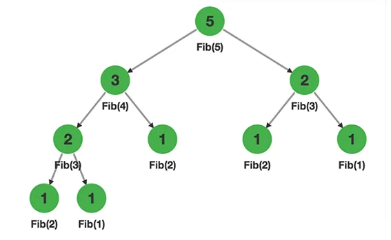
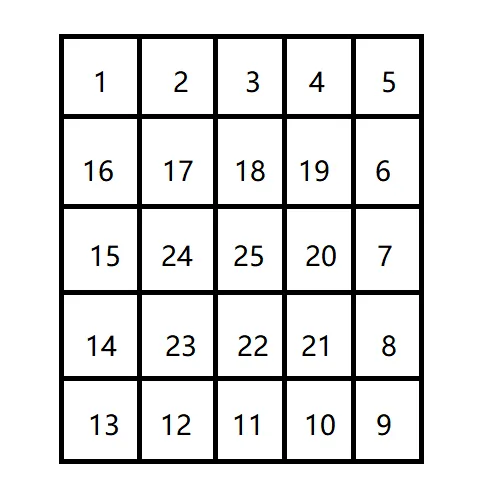
05 / SECTION
超详细背包DP九讲（算法分析+问题分析+代码分析）
- 01 背包：每件物品选或不选，容量 V。
f[j] = max(f[j], f[j-w[i]] + v[i])，容量维度必须倒序，否则同一物品被重复使用。
cpp
for (int i = 1; i <= n; ++i)
for (int j = V; j >= w[i]; --j)
f[j] = max(f[j], f[j - w[i]] + v[i]);- 完全背包：每件可用无限次，容量维度正序即可（等价于“用了还能再用”）。
- 多重背包：第 i 件最多
c[i]个。 - 朴素：拆成
c[i]个 01 物品，O(V·Σc)； - 二进制拆分：拆成
1,2,4,…,余数组，O(V·Σlog c)； - 单调队列优化：
O(V·n)，按j mod w分组维护窗口最大值。 - 混合背包：按物品类型分别走 01 / 完全 / 多重。
- 二维费用背包：状态加一维（体积 + 重量），转移同样倒序。
- 分组背包：每组只能选一个，循环“组 → 容量倒序 → 组内物品”。
- 有依赖的背包（树形）：先 DFS 把子树合成“父必选”的泛化物品，再做分组背包；等价于树上 DP。
- 求方案数：把
max换成+，注意初始化f[0]=1。 - 求字典序最小的最优方案：记录每个状态的决策，或从后往前 DP 再贪心输出。
- 记忆口诀：01 倒序、完全正序、多重拆分、分组加一层循环。
06 / SECTION
区间DP实例讲解
- 特征：答案由“子区间”合并而来，状态形如
f[l][r]。 - 通用写法：先枚举区间长度（保证短区间先算完），再枚举左端点，最后枚举分割点 k。
- 复杂度
O(n³)，n 通常 ≤ 500；可用四边形不等式优化到O(n²)。 - 例题（石子合并）：环形/链形石子，每次合并相邻两堆，代价为两堆之和，求最小（最大）总代价。
f[l][r] = min{ f[l][k] + f[k+1][r] } + sum(l, r)；- 环形处理：把数组复制一份接在后面，长度取 n 的窗口。
- 例题（括号匹配 / 回文分割）：按“能否由更短区间拼成”定义转移。
- 例题（能量项链 / 矩阵连乘）：
f[l][r] = min{ f[l][k] + f[k+1][r] + cost }。
cpp
for (int len = 2; len <= n; ++len)
for (int l = 1; l + len - 1 <= n; ++l) {
int r = l + len - 1;
for (int k = l; k < r; ++k)
f[l][r] = min(f[l][r], f[l][k] + f[k + 1][r] + sum[r] - sum[l - 1]);
}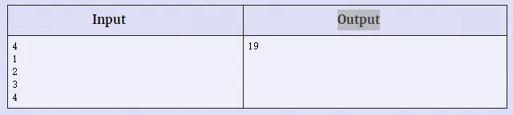
07 / SECTION
DAG上的DP实例讲解
- 特征：状态之间的依赖构成有向无环图，按拓扑序递推即可。
- 若图有环，需先缩点（SCC）成 DAG，再在缩点后的图上 DP。
- 例题（最长路径）：
f[v] = max(f[u] + w(u,v))，按拓扑序更新；入度为 0 的点为起点。 - 例题（DAG 上的路径计数）：
f[v] += f[u]，同样按拓扑序累加。 - 例题（矩形嵌套 / 导弹拦截变体）：把“能嵌套/能接续”建成边，转成 DAG 最长路。
- 实现要点：BFS 拓扑排序 + 处理入度；也可用记忆化搜索（DFS 天然按依赖顺序）。
cpp
// 拓扑序 + 最长路
for (int u : topo)
for (auto [v, w] : g[u])
f[v] = max(f[v], f[u] + w);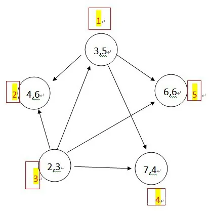
08 / SECTION
树形DP概念和实例讲解
- 特征：状态定义在树结点上，转移靠子树合并（把儿子答案并进父亲）。
- 两种顺序：自底向上（后序 DFS 回溯时合并）、自顶向下（先算父亲再下传）。
- 例题（没有上司的舞会）：每个结点“选/不选”不能同时选父子。
f[u][0] = Σ max(f[v][0], f[v][1])；f[u][1] = h[u] + Σ f[v][0]。- 例题（树的重心/直径）：直径 = 经过某点的两条最长下行链之和，DFS 时顺手维护最大两个。
- 例题（树上背包）：
f[u][j]表示 u 的子树用 j 的容量，合并儿子时做一次“分组背包”，复杂度O(n·V²)（可用子树大小上界剪枝）。 - 实现细节：根要特判、递归深度大时改迭代后序、多组数据记得清空。
cpp
void dfs(int u, int fa) {
f[u][1] = h[u];
for (int v : g[u]) if (v != fa) {
dfs(v, u);
for (int j = m; j >= 1; --j)
for (int k = 0; k <= j; ++k)
f[u][j] = max(f[u][j], f[u][j - k] + f[v][k]);
}
}09 / SECTION
数位DP概念和实例讲解
- 特征：统计
[L, R]内满足某种“按十进制位”性质的数的个数（不含 4、相邻位差、数位和等）。 - 通用状态：
f[pos][…][tight][lead]——当前位、附加信息、是否贴上界、是否有前导零。 - 答案用前缀和思想：
solve(R) - solve(L-1)。 - 转移：枚举当前位数字（受
tight限制），向下递归。 - 优化：记忆化时
tight == true的状态不能缓存（它依赖具体上界），或在tight=false时才记忆化。 - 例题（不要 4 和 62）：记录上一位是否为 6，当前位为 4 或（上一位 6 且当前 2）则非法。
- 例题（数位之和 / 整除）：附加状态为“当前和”或“模 k 余数”。
- 例题（统计 1 的个数）：附加状态“已出现 1 的次数”，或按位贡献拆分计算。
cpp
int dfs(int pos, int pre, bool tight, bool lead) {
if (pos == -1) return 1;
if (!tight && !lead && f[pos][pre] != -1) return f[pos][pre];
int up = tight ? dig[pos] : 9, res = 0;
for (int d = 0; d <= up; ++d) {
if (d == 4 || (pre == 6 && d == 2)) continue;
res += dfs(pos - 1, d, tight && d == up, lead && d == 0);
}
if (!tight && !lead) f[pos][pre] = res;
return res;
}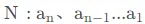
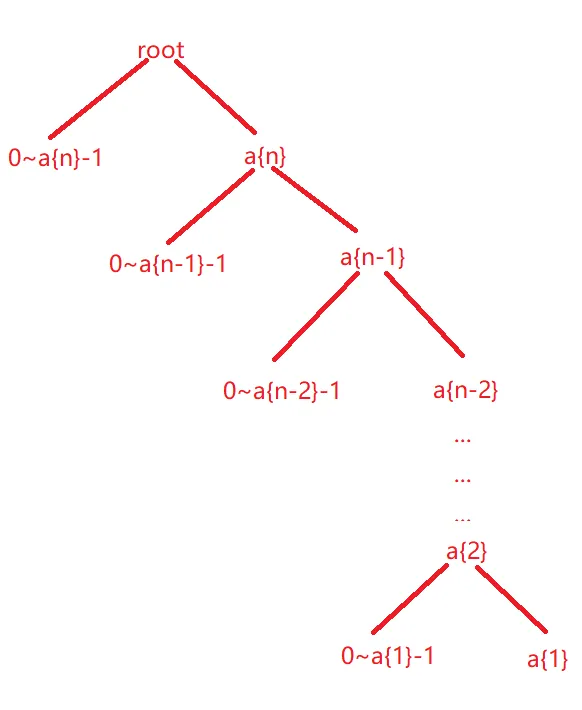
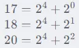
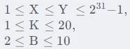
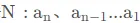
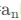
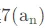
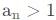
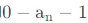
10 / SECTION
什么是状态压缩DP？
- 定义：当状态的“附加信息”是一个小集合（n ≤ 20 左右）时，用一个整数的二进制位表示该集合，从而把状态压成
f[mask]。 - 典型特征：棋盘覆盖、选取互不相邻的格子、TSP（已访问城市集合 + 当前城市）。
- TSP：
f[mask][i]= 已访问集合 mask、当前在 i 的最小代价；O(2ⁿ·n²)。 - 棋盘型：先预处理出所有“行内合法”的 mask（如相邻位不同时为 1），再枚举相邻行的兼容 mask。
- 常用位运算：判相邻冲突
s & (s<<1)、判上下冲突s & t、枚举子集t = (t-1) & s。 - 空间优化：
mask维只用合法状态（离散化下标）可大幅缩小；或滚动掉一层。
cpp
// 状压 TSP
f[1][0] = 0;
for (int mask = 1; mask < (1 << n); ++mask)
for (int i = 0; i < n; ++i) if (mask >> i & 1)
for (int j = 0; j < n; ++j) if (!(mask >> j & 1))
f[mask | 1 << j][j] = min(f[mask | 1 << j][j], f[mask][i] + d[i][j]);11 / SECTION
状态压缩DP图文实例讲解（一）
- 例题（蒙德里安的梦想 / 骨牌覆盖）：用 1×2 骨牌铺满 n×m 棋盘，求方案数。
- 按列转移：
f[i][s]表示前 i-1 列铺满、第 i 列伸出状态为 s； - 相邻两列的合法性：
s & t == 0（不重叠），且s | t的每段连续空位长度为偶数（竖放要成对）。 - 例题（炮兵阵地）：每行放炮兵，攻击范围为上下左右各两格，求最多数量。
- 需要记住前两行状态：
f[i][s1][s2]（滚动掉 i）； - 预处理行内合法 mask（间隔 ≥2）与地形限制，再判三行互不冲突。
- 简化技巧：把“列”当阶段、把“行状态”当附加信息，是棋盘类状压的通用套路。
cpp
if ((s & t) == 0 && ok[s | t]) // ok[x]：x 的连续 0 段长度均为偶数
f[i][s] = (f[i][s] + f[i - 1][t]) % MOD;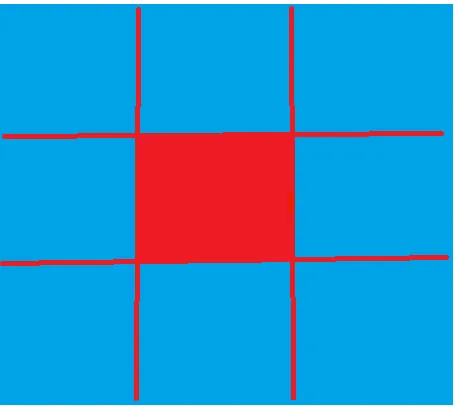
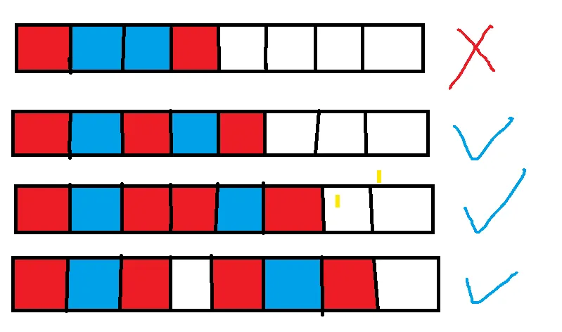
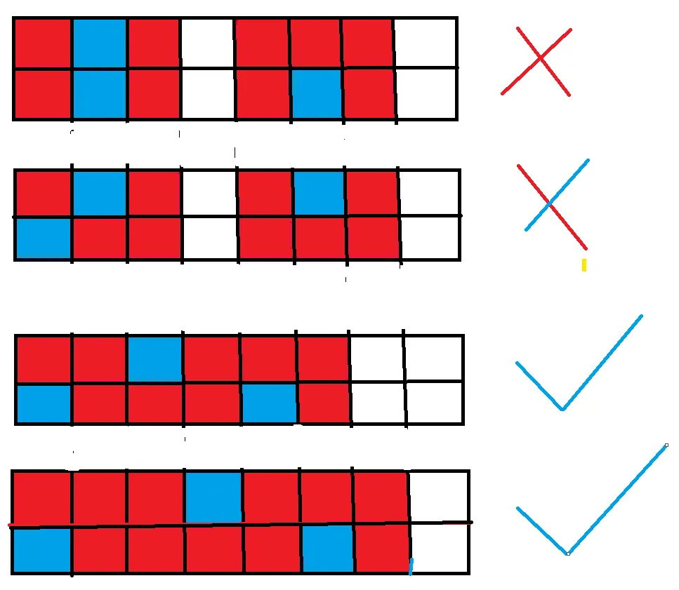
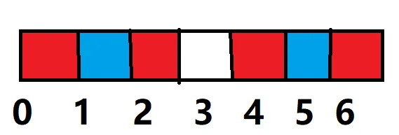
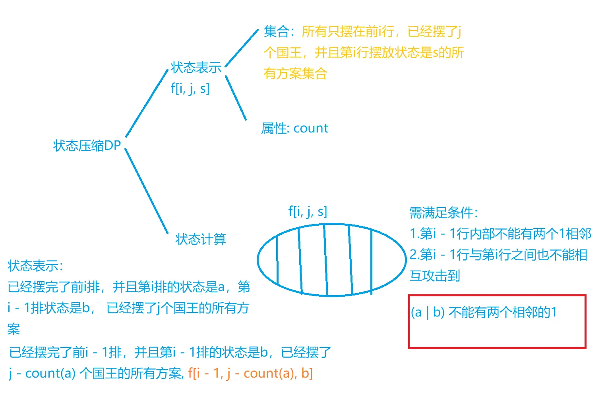
12 / SECTION
状态压缩DP图文实例讲解（二）
- 例题（互不侵犯 / 国王）：n×n 棋盘放 k 个“国王”，互不攻击（周围 8 格）。
f[i][s][cnt]：第 i 行、状态 s、已放 cnt 个；- 合法 s：
(s & (s<<1)) == 0；相邻行：(s & t) == 0 && ((s<<1) & t) == 0 && (s & (t<<1)) == 0。 - 例题（玉米田）：部分格子不能种，用行限制 mask 与状态做“与”判断。
- 例题（集合覆盖 / 最短路径状压）：状态是“已收集的关键点集合”，转移加上边权。
- 通用优化：
- 预处理合法状态列表
valid[]，DP 在该列表上循环，跳过大量非法状态； - 用
popcount快速维护计数维； - 行数很多时滚动数组。
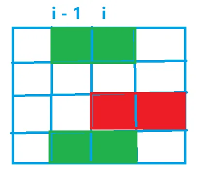
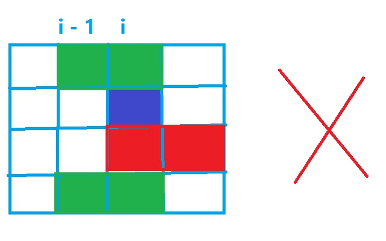

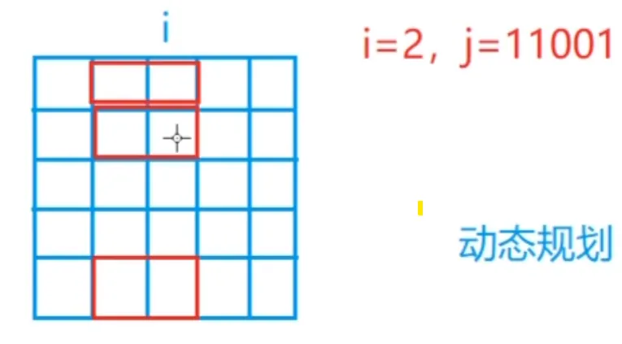
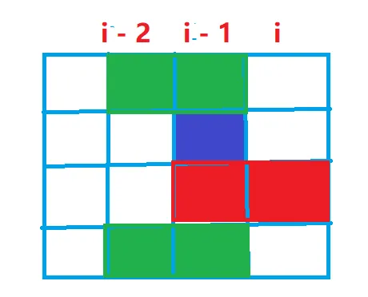
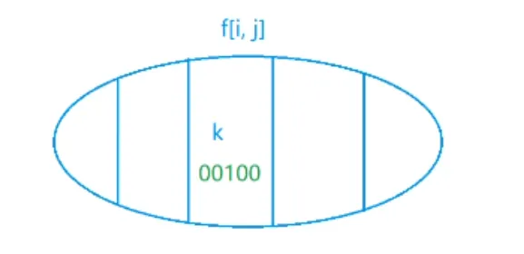
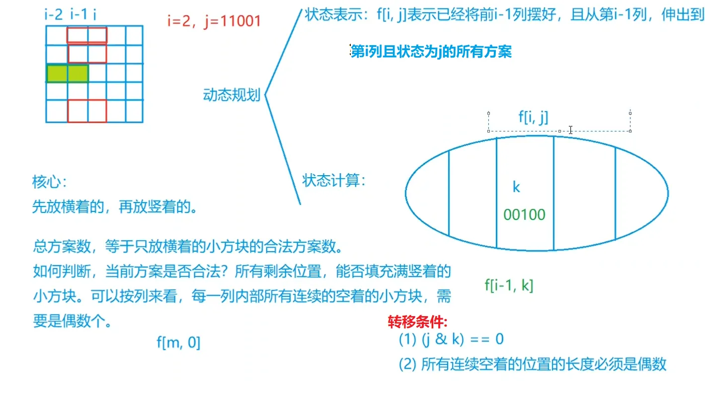
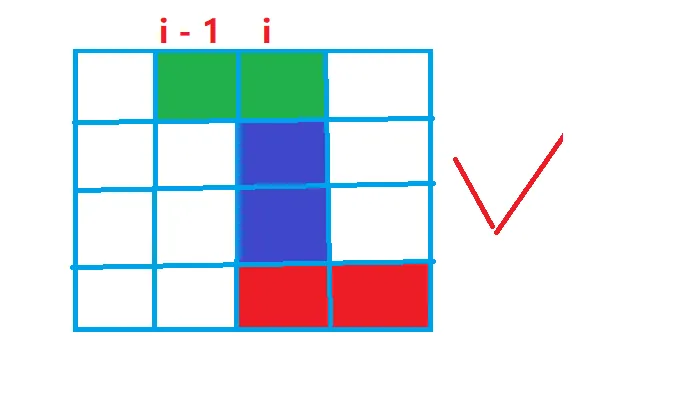

13 / SECTION
什么是哈希？
- 本节语境：DP 中的“状态哈希”——当状态无法用少量整数下标表示（如集合、字符串、树结构），用哈希把状态映射成键存进
map/unordered_map。 - 常见做法：结构体 + 自定义哈希函数（或
tuple打包成字符串），用unordered_map<Key, Value>记忆化。 - 风险：哈希碰撞会造成错误答案（不只是变慢），关键题用双哈希或
map（红黑树）保证正确。 - 另一种用途：哈希优化比较（如判断两状态是否相同、比较两个序列），配合 DP 做快速判重。
- 提示：能设计成整数下标的 DP 尽量别用哈希表——常数差十倍以上；哈希只用于状态稀疏或结构复杂的场景。
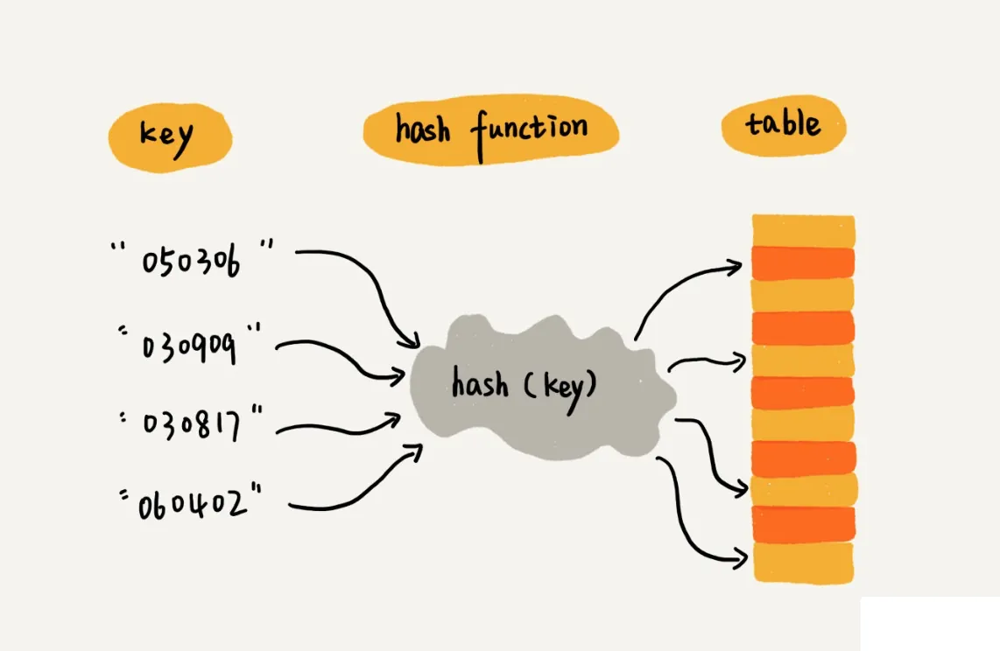
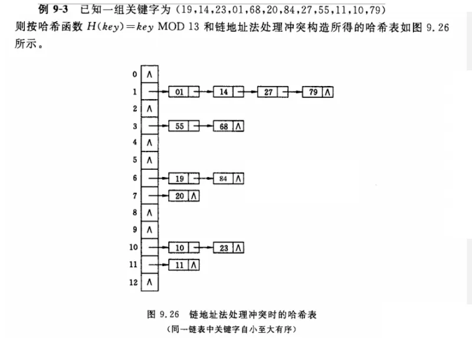
14 / SECTION
插头DP图文实例讲解
- 定义：按格逐个推进，用“轮廓线上的插头状态”表示当前边界，是状压 DP 的进阶形式（又称“连通性状态压缩 DP”）。
- 适用：网格上的回路/路径覆盖问题（如单回路哈密顿回路计数、铺砖要求连通）。
- 状态编码：括号表示法（3 进制：0 无插头、1 左括号、2 右括号）或最小表示法；用哈希表存
(轮廓, 值)。 - 转移：根据当前格的左插头 L、上插头 U 的四种情况（00 / 10 / 01 / 11）分别决定“建新插头、延长、合并、闭合”。
- 复杂度：状态数约
O(n·m·3^m)，实际远小于理论值（大量状态非法）。 - 本节的图文主要演示“轮廓线如何随格子推进而移动”，理解这一句就够了：插头 = 与已处理区域相连的边。
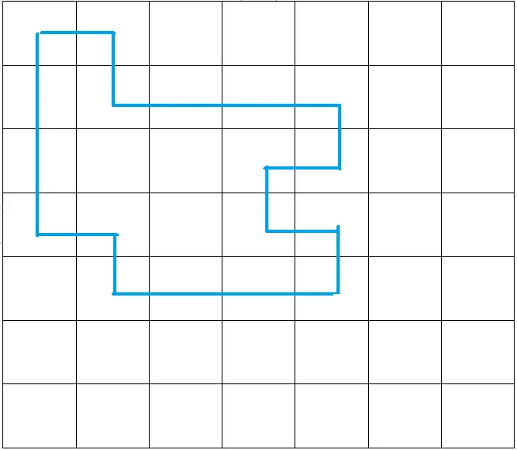
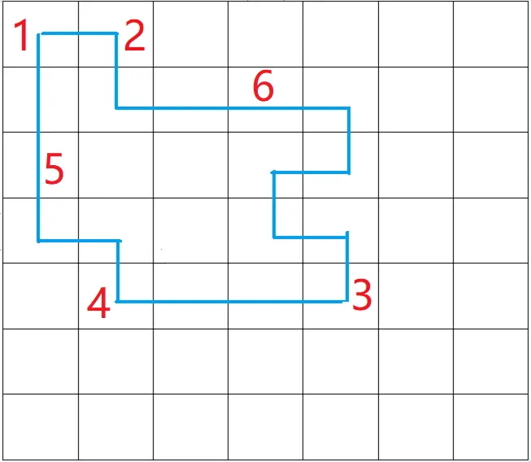
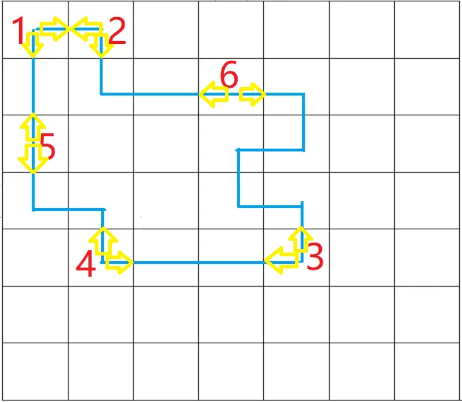
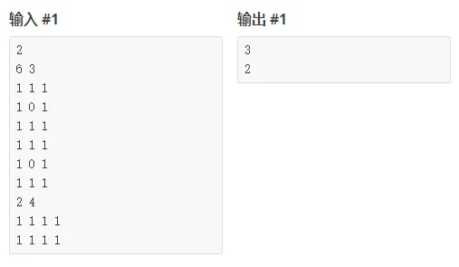
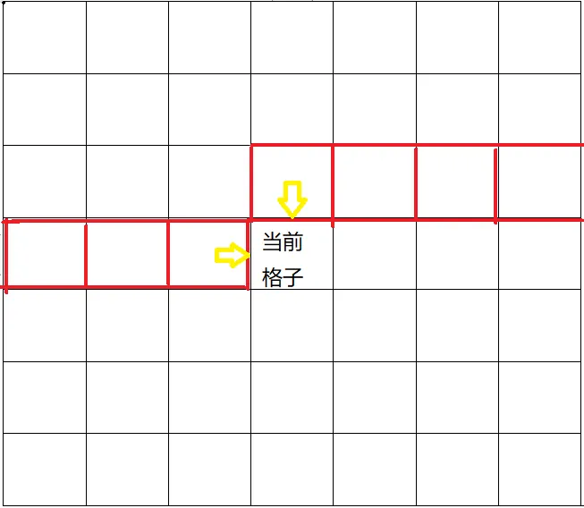
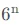
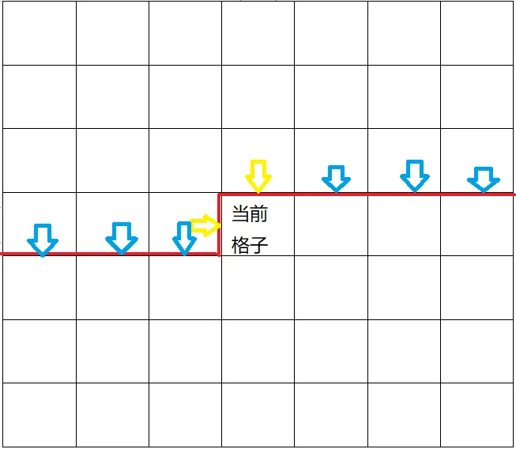
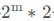
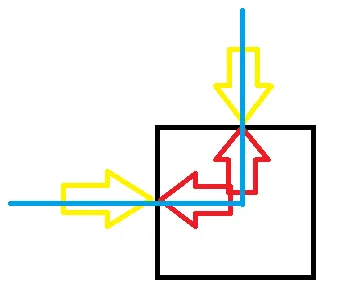
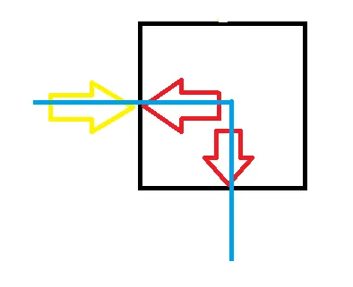
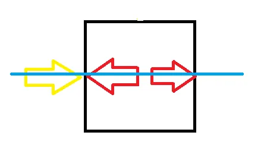
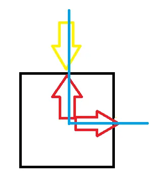
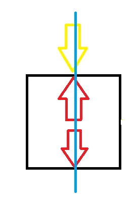
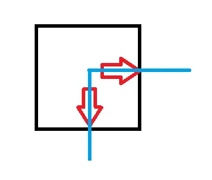
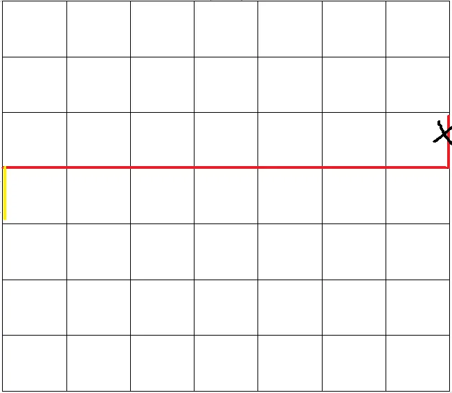
15 / SECTION
计数DP实例讲解
- 特征：求方案数/个数，转移用加法，常带取模。
- 例题（整数划分）：把 n 拆成若干正整数之和的方案数（有序/无序两种）。
- 无序：完全背包写法，物品为 1..n，
f[j] += f[j-i]； - 有序：
f[n] = Σ f[n-i]，即 2 的幂。 - 例题（走格子方案数）：
f[i][j] = f[i-1][j] + f[i][j-1]（杨辉三角）。 - 例题（错排 / 卡特兰数）：
- 错排
D[n] = (n-1)(D[n-1] + D[n-2])； - 卡特兰
C[n] = C[n-1]·(4n-2)/(n+1)（组合数形式）。 - 计数 DP 两大坑：漏算/重算（要保证“每个方案被唯一种方式计数”）、取模前减法为负（
(a - b + MOD) % MOD）。


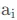
16 / SECTION
什么是概率DP？
- 定义：状态的“值”是概率或期望，按全概率公式 / 期望线性性做转移。
- 两条基本公式：
- 概率：
P(A) = Σ P(A|B_i)·P(B_i)； - 期望：
E(X) = Σ x_i·p_i，且期望可加（E(X+Y)=E(X)+E(Y)，无需独立）。 - 两种方向：
- 正推（从初态往后）：
f[next] += f[cur] * p； - 逆推（从终态往前）：
E[cur] = Σ p_i·(cost_i + E[next])，常用于“求从当前到结束的期望步数”。 - 注意：概率 DP 常出现“无限状态”（可能永远走不到终点），需要设收敛条件或用方程法解（高斯消元）。
- 典型题：抛硬币期望次数、迷宫随机游走、抽卡期望、概率 + 状压（如“收集齐 n 种卡”）。
cpp
// 逆推求期望步数：E[i] = 1 + Σ p_j * E[next_j]
for (int i = n - 1; i >= 0; --i) {
double e = 1;
for (auto [j, p] : trans[i]) e += p * E[j];
E[i] = e;
}17 / SECTION
概率DP实例讲解
- 例题（收集卡片）：已有 i 种，抽到新卡概率
(n-i)/n，求集齐的期望次数。 E[i] = 1 + (i/n)·E[i] + ((n-i)/n)·E[i+1]，整理得E[i] = E[i+1] + n/(n-i)；- 从
E[n]=0逆推，答案E[0]；等价于n·(1 + 1/2 + … + 1/n)。 - 例题（飞行棋 / 掷骰子前进）：
f[i]为到终点的期望步数，转移带“原地不动”的概率。 - 例题（概率 + 状压）：
f[mask]表示已获得集合 mask 的期望，转移枚举下一步抽到的种类。 - 关键：自己转移到自己的项要移项（
E[i]出现在等式两边时先解方程），否则递推不收敛。
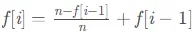
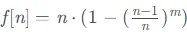
18 / SECTION
什么是线性DP?
- 定义：状态沿“线性序列”（下标 1..n）推进，转移只依赖前面若干个位置的 DP。
- 代表题型：LIS、LCS、最大子段和、编辑距离、数字三角形、打家劫舍。
- LCS（最长公共子序列）：
f[i][j] = (a[i]==b[j]) ? f[i-1][j-1]+1 : max(f[i-1][j], f[i][j-1])。 - 编辑距离：增/删/改三种操作，
f[i][j] = min(f[i-1][j], f[i][j-1], f[i-1][j-1]) + (a[i]!=b[j])。 - 最大子段和：
f[i] = max(a[i], f[i-1] + a[i])，答案取全局 max（可再滚动成 O(1) 空间）。 - 空间优化：若只依赖前一层/前几项，滚动数组即可（如 LCS 可降到 O(min(n,m))）。
cpp
// LCS
for (int i = 1; i <= n; ++i)
for (int j = 1; j <= m; ++j)
f[i][j] = (a[i] == b[j]) ? f[i - 1][j - 1] + 1
: max(f[i - 1][j], f[i][j - 1]);19 / SECTION
线性DP图文实例讲解
- 例题（最长上升子序列 LIS）：
O(n²)转移 +O(n log n)贪心二分两种写法（见第 2 节）。 - 例题（最长公共子串，要求连续）：
f[i][j] = (a[i]==b[j]) ? f[i-1][j-1]+1 : 0，答案取全局 max。 - 例题（字符串编辑）：插入/删除/替换，注意初始化
f[i][0]=i、f[0][j]=j。 - 例题（股票买卖 / 状态机 DP）：
f[i][0/1]表示第 i 天“持有/不持有”的最大收益，转移在两种状态间切换（有限状态机是线性 DP 的常见形态）。 - 状态机思路很重要：把“当前处于哪个阶段”作为一维状态，几乎所有带约束的序列题都能这样拆。
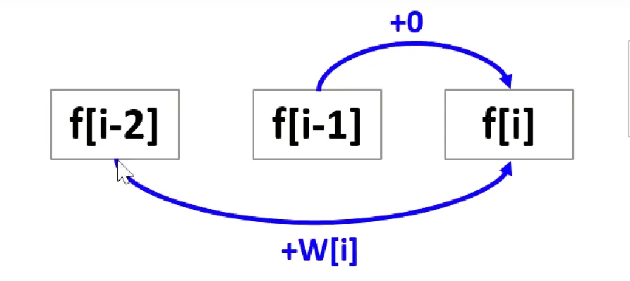
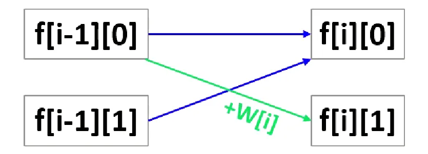
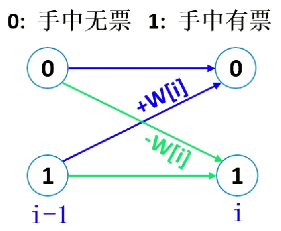
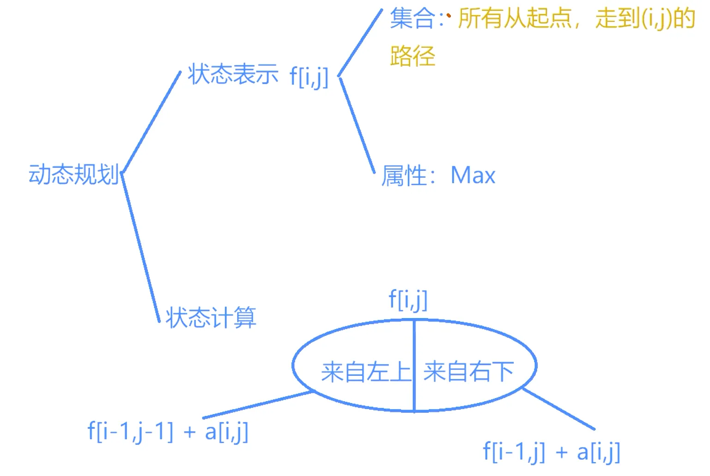
20 / SECTION
动态DP实例讲解
- 问题：DP 的转移会动态改变（如树上单点修改权值后反复询问最大独立集），每次重算太慢。
- 做法：把线性递推写成矩阵乘法形式，用线段树维护区间矩阵乘积，单次修改
O(log n)。 - 树上情形：树链剖分把路径拆成重链，每条重链用线段树维护“转移矩阵”，查询时把轻儿子的贡献先算好。
- 典型题：带修改的“没有上司的舞会”（最大权独立集）、带修改的最大子段和。
- 要点：矩阵乘法需满足结合律（所以 max-plus 半环也可用）；常数大，注意取模与 INF。
cpp
// 形如 f[i] = max(f[i-1] + a, b) 的转移可写成 2×2 矩阵
// | f[i] | | a b | | f[i-1] |
// | 0 | = | -∞ 0 | * | 0 |


21 / SECTION
DP优化（一）单调队列/单调栈优化实例讲解
- 场景：转移形如
f[i] = min{ f[j] + w(i, j) }，其中 j 的可行区间是一个滑动窗口，且决策点具有单调性。 - 单调队列：维护窗口内的候选 j，队首为最优；新元素入队前把“更差且更晚”的队尾弹出。
- 典型题（滑动窗口最大值）：
f[i] = a[i] + max(f[j])，j ∈ [i-k, i-1]，用单调队列 O(n)。 - 典型题（多重背包）：按
j mod w分组，组内用单调队列维护f[j - k·w] - k·v的最大值。 - 单调栈：处理“以 i 为最值的左右边界”（如柱状图最大矩形、下一个更大元素），也是很多 DP 预处理的一部分。
- 判别：转移区间是滑动的 + 候选值可比大小 ⇒ 单调队列；只关心“第一个大于/小于” ⇒ 单调栈。
cpp
// 窗口长度 k 的最大值
deque<int> dq;
for (int i = 1; i <= n; ++i) {
while (!dq.empty() && dq.front() < i - k) dq.pop_front();
while (!dq.empty() && f[dq.back()] <= f[i - 1]) dq.pop_back();
dq.push_back(i - 1);
f[i] = f[dq.front()] + a[i];
}22 / SECTION
DP优化（二）斜率优化实例讲解
- 场景：
f[i] = min_j { f[j] + (s[i] - s[j])² }这类转移展开后含s[i]·s[j]交叉项 —— 无法直接用单调队列。 - 化形：把式子整理成
f[i] = s[i]² + min_j { (f[j] + s[j]²) - 2·s[i]·s[j] }，即“直线y = kx + b在 x 处取最小”。 - 凸包维护：把每个 j 看成点
(x_j, y_j)，斜率为2·s[i]；最优 j 在凸包切点上，用单调队列维护下凸壳，均摊 O(1)。 - 使用条件：
s[i]单调（保证查询点单调移动）、x_j单调（保证插入顺序）。 - 若不单调：改用二分查找凸包或 Li Chao 线段树 / CDQ 分治，复杂度
O(n log n)。 - 常见坑：除法改乘法（避免精度）、叉积判斜率、
long long溢出。
cpp
// 维护下凸壳，查询斜率 k 处最小：while (head+1<tail && slope(q[head],q[head+1]) <= k) ++head;
inline double slope(int a, int b) { return (Y[b]-Y[a]) / (X[b]-X[a]); }23 / SECTION
DP优化（三）四边形不等式优化实例讲解
- 场景：区间 DP 形如
f[i][j] = min_{k∈[i,j)} { f[i][k] + f[k+1][j] + w(i,j) }，且w满足四边形不等式。 - 四边形不等式：对
a ≤ b ≤ c ≤ d，有w(a,c) + w(b,d) ≤ w(a,d) + w(b,c)（“交叉小于包含”）。 - 结论：最优决策点
opt[i][j]满足单调性opt[i][j-1] ≤ opt[i][j] ≤ opt[i+1][j]。 - 于是枚举 k 时只需在
[opt[i][j-1], opt[i+1][j]]范围内找，总复杂度从O(n³)降到O(n²)。 - 另一类用法（1D/1D 型）：
f[i] = min_j { f[j] + w(j,i) }，若w满足四边形不等式则决策单调，可用分治或单调队列。 - 验证方式：打印出
opt表检查单调性，或直接测小数据对拍。
cpp
for (int len = 2; len <= n; ++len)
for (int i = 1; i + len - 1 <= n; ++i) {
int j = i + len - 1, best = INF, bk = 0;
for (int k = opt[i][j - 1]; k <= opt[i + 1][j]; ++k) {
int v = f[i][k] + f[k + 1][j] + w(i, j);
if (v < best) best = v, bk = k;
}
f[i][j] = best, opt[i][j] = bk;
}